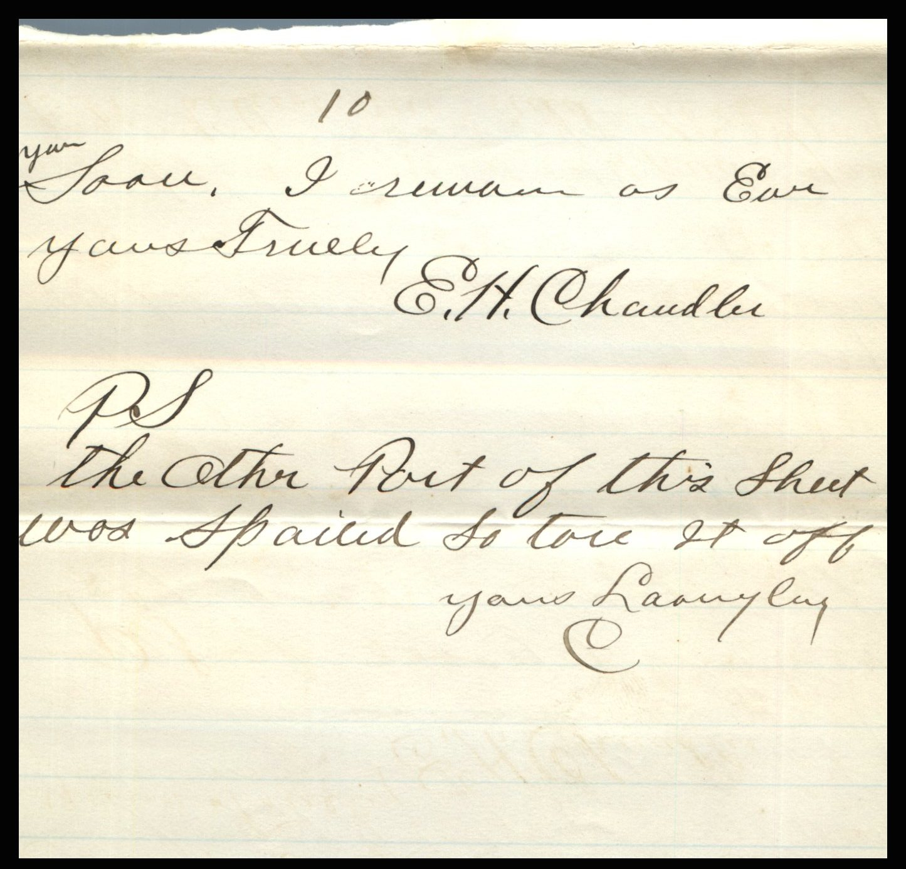
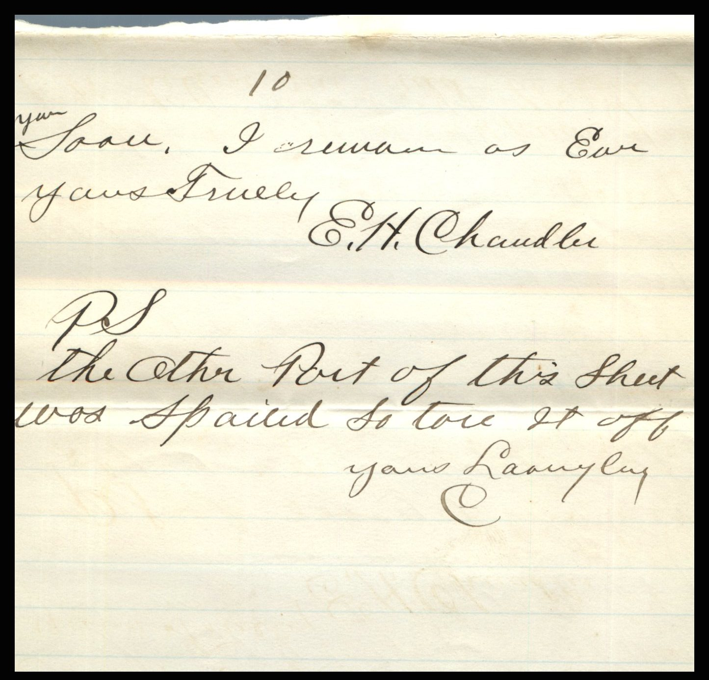

From: Elijah H. Chandler, To: Jeanette Knox Chandler


 
{kind=link}
 From: Elijah H. Chandler, To: Jeanette Knox Chandler
Mailed From: Pearl, Illinois on October 13, 1886
From: Elijah H. Chandler, To: Jeanette Knox Chandler
Mailed From: Pearl, Illinois on October 13, 1886
Mailing Address: Miss Nettie Knox Sidney, Iowa Freemaut Co.
Pearl, Illinois October 13th, 1886 Dearest Nettie, Your kind letter of 10th received today and acutely read with the greatest of pleasure. I will now try and answer after a long days work. I commenced work this morning at 6:30 and quit tonight at 7:15 but a man that is unfortunate enough to have to railroad for a living must expect to put up with anything at any time. I was going to go to church tonight but did not get away from the depot till after the second bell had rung. I was landing to go to church then write to you after I came home. well they may keep me from going to church once in a while but they don't near fix me so I can't write you. The man Allen that went in to the church while you was at home has preached for us twice but I don't like him. Very well, I don't think he is sincere in what he preaches. I think he is too easily changed but hope he does mean all right anyway. Yes Nettie It's true there will be a time we all must part but I dully believe that its for a happier meeting. If we live as we should live while in this world. I know I am going to do the best I know how to get there and I think that will clear me. I trust you will remain firm to the end and I believe you will. Yes Maggie came home yesterday. She had a lot to tell about what she seen in St. Louis. She says she is writing to you today so I suppose she will tell you all about her trip. I was real glad she came home. It was awful lonesome without you or Maggie either at home. Ama Lakin married the man Wyrock. They are in Roadhouse boarding at the Phoenix house. The old folks wont let them come home. Ama run off and went to him. No they have not commenced work on the new road yet and I hope they will not soon. There is no one here they knows what they will do yet. No Scruby did not come over Sunday. I saw old Opr. from Juseyville today. He said S. was coming out next Sunday. If he does I will give him your regards. Bill Stewart's folks are going to move to Nebraska. They ordered a car today. Bill is out there not. I think he is going to fix Quit Brown up out there with a law office. Emma Lamerny and Bell St. Armand came to Pearl today. Do you know they? They are Bill Hess's sisters. I will tell you why I thought of the night I told you my wish when I was with Billy Miller. First was because it was the first time I had passed there since you left. That made me think of that time then I thought how glad I was that I didn't let the opportunity pass without asking you to be my wife and again I wondered how it was that Ammon would be deprived of all that was so dear to him. Why could I not as well have been with you that night as anyone else. I think any one should enjoy this life the best they can because we only live it once. No I will never forget that night and many other times that I was with you that I will not forget soon. I always think of our stopping place when I go down the railroad over the little bridge. Nettie I went with you down there once with the full intention of asking you to be my wife but when I thought I would wait till some other time. I didn't think about you leaving then. I loved you well enough long ago to ask you but for some cause I did not. I know it was not because I was afraid to. Yet I some times doubted getting a favorable answer but I fixed my mind to ask you, let the answer be yes or no. Now I think you will believe me and believe that my life for you will never change. And I am willing to trust you some of these days when I think you have about get your visit out I am going to name the matter to your Pa and Ma and see what they say about it. I know it will be a pretty tough question for me but I know I can. You remember we was talking about the time and that we would or could fix the day while you was out there. I will say that I am not wanting to rush about it but would like to hear about when you think it could suit you. Could you say in what month you will be mine forever? Now Nettie I would not write like this only I think that if you are as sincere about it as I am that it ives me the privilege. When you answer let me know what you think about it. It might be some help to me. When I know what times gets to be. Lau Hess did not have much today to me. He said Hattie did not know that to think. He asked me what he should tell her. I told him I did not have any word to send.She knew that I would not answer the last letter she wrote me. Lizzie F. was over at the depot Saturday and said she was looking for Hattie at the noon train but I know she was not. She thought it would give me some uneasiness but I could of told her it would not. Now I have written all I can think of tonight. Tabe Heother has gone to St. Louis to work for a tobacco house. He is going to shovel for them. Jared Fragler is running his saloon for him. Now we'll close. Hoping to hear form you soon. I remain as ever Yours Truly, E. H. Chandler P.S. The other part of this sheet was spilled upon so tore if of. Yours lovingly E.H.C